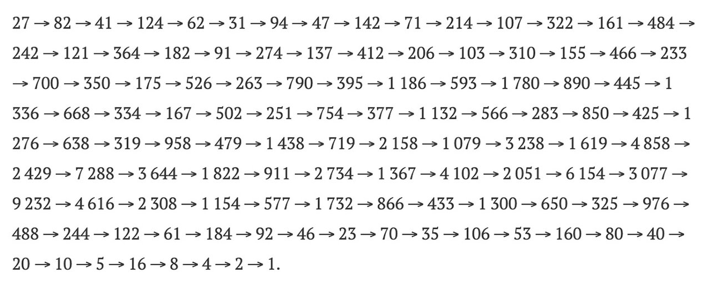
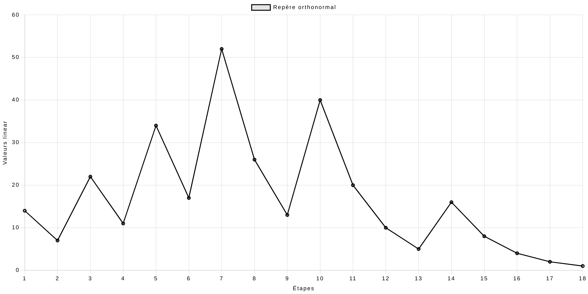

Énoncé et histoire du problème
Lothar Collatz, mai 1990
Origines et énoncés de la conjecture
L'histoire de la conjecture de Syracuse remonte au début du XXe siècle, lorsque le mathématicien
allemand Lothar Collatz
a formulé cette énigme mathématique. Cette conjecture, bien que
relativement simple à comprendre, demeure l'un des problèmes non résolus les plus célèbres en
mathématiques, et elle continue d'attirer l'attention des mathématiciens du monde entier.
L'énoncé de la conjecture de Syracuse est le suivant : la suite de Syracuse de n'importe quel entier
strictement positif atteint 1
Malgré sa simplicité apparente, la conjecture de Syracuse pose un défi mathématique intrigant, et
personne n'a encore pu prouver de manière concluante qu'elle est vraie pour tous les nombres. Cette
énigme continue d'inspirer des recherches et des explorations mathématiques, et elle demeure l'un
des mystères non résolus de la discipline.
Application de Syracuse
La conjecture de Syracuse repose sur une série d'opérations appliquée à un nombre entier strictement
positif.
Cette opération, appelée application de Syracuse, est définie ainsi :
- Prenez n'importe quel nombre entier strictement positif
- S'il est pair, divisez-le par 2
- S'il est impair, triplez-le et ajoutez 1
Remarque : on note conventionnellement \(N\) le nombre de départ.

Application de Syracuse successives pour \(N=27\)

Représentation graphique de la suite de Syracuse pour \(N=28\)
La suite de Syracuse
En itérant sur l'application de Syracuse, nous pouvons obtenir une suite appelée suite de Syracuse.
Cette suite se définit par récurrence.
\[\forall n\in \mathbb N :\quad u_{n+1}=
\left \{
\begin{array}{c @{=} c}
\displaystyle \frac{u_n}{2} & \text{Si } u_n \equiv 0 [2] \\
3u_n+1 & \text{Si } u_n \equiv 1[2]
\end{array}
\right.
\]
Avec \(N\in \mathbb N^*\quad ;\quad u_0=N\)
En prenant, par exemple, \(u_0=28\), la suite de Syracuse est la suivante
14 ; 7 ; 22 ; 11 ; 34 ; 17 ; 52 ; 26 ; 13 ; 40 ; 20 ; 10 ; 5 ; 16 ; 8 ; 4 ; 2 ; 1.
1 étant impair, on le multiplie par 3 puis on ajoute 1 ce qui nous donne 4 qui est pair et que l'on
divise donc par 2 pour retomber sur 1...
Le cycle (4, 2, 1) se répète alors indéfiniment, on parle de cycle trivial.
La suite compressée de Syracuse
En observant la formule de la suite de Syracuse, on remarque que si \(u_n\) est impair,
\(u_{n+1}\) est nécessairement pair et sera donc divisé par deux lors de la prochaine opération.
Pour démontrer, considérons \(u_n\) impair :
\[u_n=2k+1\]
Avec \(k\) entier. Ainsi, par l'application de Syracuse
\[u_{n+1}=3u_n+1=3(2k+1)+1=6k+4=\underbrace{2(3k+2)}_{\text{de la forme } 2k', \; k'=3k+2}\]
Nous pouvons donc définir une variante de la suite de Syracuse appelée Suite compressée de Syracuse.
\[\forall n\in \mathbb N :\quad u_{n+1}=
\left \{
\begin{array}{c @{=} c}
\displaystyle \frac{u_n}{2} & \text{Si } u_n \equiv 0[2] \\
\dfrac{3u_n+1}{2} & \text{Si } u_n \equiv 1[2]
\end{array}
\right.
\]
Avec \(N\in \mathbb N^*\quad ;\quad u_0=N\)
Représentation graphique de la suite compressée de Syracuse pour \(N=28\)